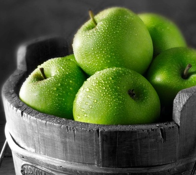

perspective:
length|none;
Властивість perspective визначає відстань від площини екрана до точки збіжності ліній і тим самим задає, наскільки виражений ефект перспективи. Точка збіжності без задання розташовується в центрі елемента і може бути змінена за допомогою властивості perspective-origin.
